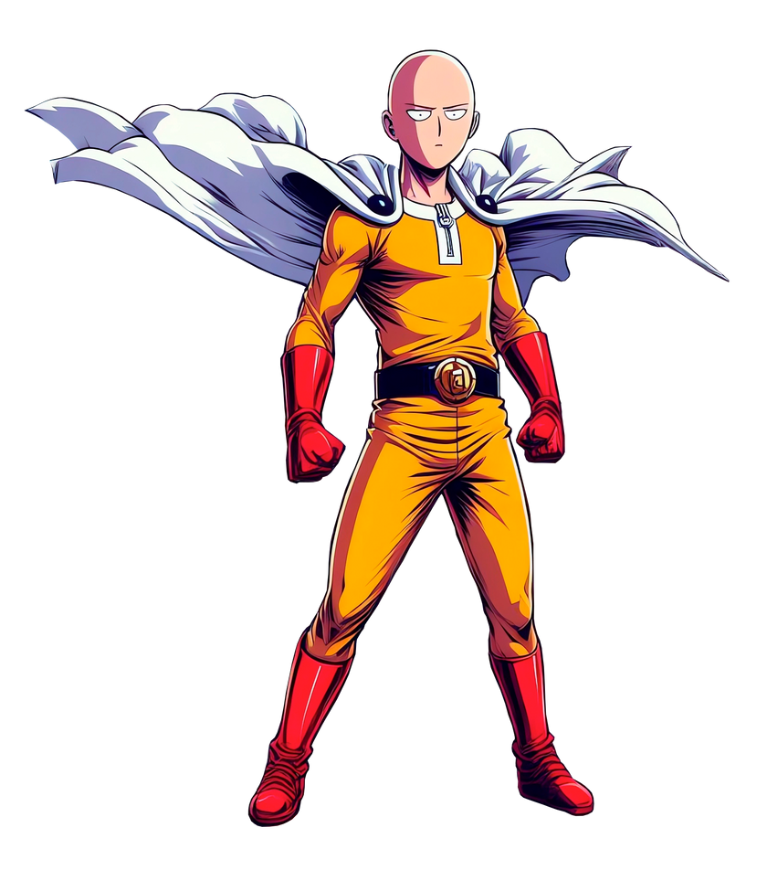

Saitama é o protagonista de "One Punch Man", um herói comum que se tornou extraordinariamente poderoso após treinar intensamente por três anos, sendo capaz de derrotar qualquer adversário com um único soco.

LINHA TEMPORAL
Infância e Juventude: Era um jovem comum, sem habilidades especiais.
Treinamento Intenso: Submeteu-se a um treinamento físico e mental extremamente rigoroso por três anos.
Adquirindo Poderes Sobrenaturais: Como resultado de seu treinamento, adquiriu força sobre-humana, velocidade incrível e resistência.
Tornando-se um Herói: Decidiu se tornar um herói profissional, lutando contra monstros e vilões para proteger a humanidade.
Enfrentando Desafios Monótonos: Ele se vê entediado e desmotivado devido à falta de desafios oponentes dignos de sua força.
Busca por um Desafio Real: Ele anseia por um oponente que possa realmente desafiá-lo.